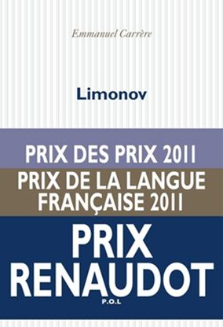
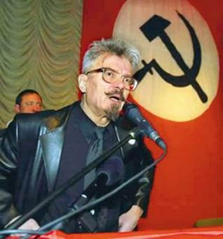
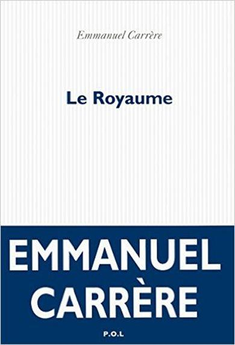
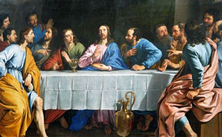
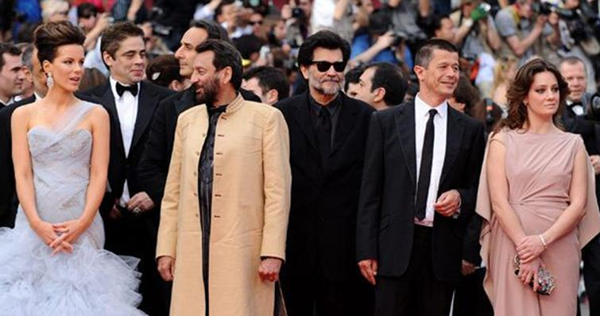

Emmanuel Carrère a obtenu le prix Renaudot, pour sa biographie d’Edouard Limonov, éd. P.O.L.
Lorsque Limonov écrivait dans L’idiot International, je me réjouissais de ses articles. C’est tout ce que j’ai lu de lui, je ne connais pas son œuvre poétique ; paraît-il immense. Ses articles dans le journal L’Idiot International me captivaient. Ce journal fut fondé par Jean Edern Hallier en 1969 et parut avec des interruptions plus ou moins longues dues à des procès. Le journal était un fatras d’idées dans lequel s’exprimaient aussi bien des gens d’extrême gauche que d’extrême droite. On a pu dire que c’était le journal des rouges-bruns.
C’est donc avec plaisir que j’ai lu la biographie romancée de Limonov par Emmanuel Carrère.
L’auteur est le fils de la célèbre soviétologue Hélène Carrère d’Encausse, on suppose donc qu’il sait de quoi il parle quand il écrit sur les pays de l’ex-bloc soviétique. E. Carrère ne dit pas être un intime de Limonov, mais sa biographie semble juste, le personnage a de la consistance.
On suit le poète russe de l’underground du fin fond de l’union soviétique ; il fut, dit la quatrième de couverture, voyou en Ukraine, poète à Moscou, domestique à New-York, journaliste à Paris puis combattant sur le front de l’Est aux côtés de ses frères serbes.
La biographie d’E. Carrère ne met pas toujours son sujet à l’honneur. Si pour un russe il est courant de faire zapoï (p.163) il est moins courant de se laisser passer pour un homosexuel qui drague les zonard « blacks » des cités. (p.171)
Limonov aurait donc été tour à tour, poète, valet de chambre d’un milliardaire américain, clochard, journaliste et homme d’affaires. Vaste programme, vaste existence.
L’auteur, citant un article de celui dont il entreprend la biographie, revient sur l’assassinat des époux Ceausescu. Il revient également sur les événements qui ont précédé cette « révolution » en dénonçant la propagande abjecte à laquelle s’est livrée la presse occidentale :
« On s’est particulièrement ému des charniers découverts à Timisoara. 4000 morts était le chiffre généralement avancé. Libération précisait : 4630... 70 000, renchérissait bravement TF 1. A l’heure de la dinde et du foie gras, les journaux télévisés montraient, sortis des fosses hâtivement creusées, des cadavres squelettiques, terreux, en pyjamas rayés. [...] Or il s’est révélé, premièrement que les cadavres, quelques dizaines au plus, avaient été déterrés pour les caméras au cimetière de Timisoara où ils reposaient après être morts de leur belle mort... » (p. 293)
Je n’avais pas cru à cette information, mais je me souviens, ce que ne dit pas l’auteur, que les chaînes de télévisions françaises avaient arrêté leurs programmes et diffusaient en image fixe une boule de sapin de Noël. Dans ce flot abject de la propagande, les journalistes avaient pris la voix du malheur et de la désolation. La propagande anti-Est de la presse occidentale ne recule devant rien.
« Plus le mensonge est gros, plus il passe. Plus souvent il est répété, plus le peuple le croit. » Disait Goebbels. Rien n’a changé depuis Timisoara : les journalistes occidentaux sont toujours aussi abjects et ils ont toujours bonne conscience : Le Bien, c’est eux !
L’ouvrage revient sur les guerres des Balkans auxquelles Limonov prit part en combattant l’arme au poing. Les récits sont honnêtes, quand l’auteur doute, il l’écrit.
Un des mérites majeurs de cet ouvrage, en plus de l’excellente biographie de Limonov qui se lit comme un roman, est de nous donner deux ou trois pistes pour comprendre le capitalisme russe et ses origines :
« Conscient de son ignorance en matière économique, Eltsine a sorti de son chapeau un jeune prodige appelé Egor Gaïdar, sorte d’Attali russe rondouillard... [...] Pour commencer les prix ont été libérés, ce qui a provoqué une inflation de 2 600 % et fait échouer l’initiative, conduite en parallèle, de « privatisation par bons ». Le 1er septembre 1992 ont été envoyés par la poste à tous les citoyens russes âgés de plus d’un an 10 000 roubles correspondant à la part de chacun dans l’économie du pays. [...] A cause de l’inflation, hélas, ces bons quand ils sont arrivés ne valaient plus rien. Leurs bénéficiaires découvraient qu’ils pouvaient tout au plus, avec, se payer une bouteille de vodka. Ils les ont donc revendus en masse à des petits malins qui leur en proposaient, disons le prix d’une bouteille et demie. »
Je n’en dirai pas plus sur cet ouvrage, le personnage est à découvrir ! Biographie d’un homme hors du commun, près de cinq cent pages bien écrites, on a du mal à lâcher le livre.
Le Royaume
Il n’y a qu’un livre, mais plusieurs ouvrages dans Le Royaume, d’Emmanuel Carrère, aux éditions P.O.L. Comme j’avais apprécié Limonov, je n’ai pas hésité à lire Le Royaume.
Au début l’auteur parle de lui. Il nous explique avoir été chrétien pendant trois ans et avoir plus ou moins perdu la foi. Comme l’ouvrage traite d’exégèse biblique concernant le Nouveau Testament, ces explications sont les bienvenues. Hélas elles se transforment vite en psyché de bobo littéraire de la vie parisienne : l’auteur a une marraine bigote mais intellectuelle, il rencontre des analystes célèbres et il fait lui-même une analyse. Il est heureux en couple et a une femme merveilleuse. Comme il écrit sur le christianisme il a un grand ami qui écrit sur le bouddhisme ; ensemble ils se retirent régulièrement pour écrire dans le Lubéron.
Tous les standards de la boboitude germanopratine y passent
Enfin, à la page 144 commence l’ouvrage véritable, une étude sur l’apôtre Paul, et là, c’est un véritable enchantement qui attend le lecteur. On reste scotché devant l’érudition, l’étude, la patience d’avoir rassemblé pareille documentation, une foule innombrable de détails, un véritable travail de dominicain. Ce n’est pas seulement sur les textes bibliques que l’auteur oriente sa tâche : la critique solide d’autres exégètes, la comparaison des méthodes historiques de ses confrères contemporains ou passés est également au programme. À travers la plume de l’auteur on suit Paul de son chemin de Damas (et même avant !) jusqu’à Rome, en s’attardant parfois sur les contemporains de l’apôtre des gentils. On se trouve transporté dans un roman épique et passionnant où la connaissance biblique et historique tient lieu de décor.
Ce roman est suivi d’une enquête et E. Carrère nous prévient :
« De fait, quand on se met à travailler là-dessus, on ne tarde pas à s’apercevoir que tout le monde exploite le même filon, très limité. D’abord les écrits chrétiens du Nouveau Testament. Ensuite les apocryphes, plus tardifs. Les manuscrits de Qûmran. Quelques auteurs païens, toujours les mêmes : Tacite, Suétone, Pline le Jeune. Enfin, Josèphe. C’est tout... » p. 311
À partir de là, on se doute bien que pour écrire du neuf sur un sujet ayant aussi peu de témoins historiques véritables, chaque auteur va y aller de son imagination. Et E. Carrère y va également de la sienne, de ses suppositions. On se demande d’ailleurs si une partie de sa trame historique ne trouve pas sa source dans son imagination, dans les indices qu’il déduit du peu d’informations dont disposent les historiens.
Ainsi page 368 on peut lire à propos de Luc et de la Cène :
« C’est dans cette chambre, surtout, qu’avait eu lieu le dernier repas pris par Jésus avec les siens : celui au cours duquel il avait prononcé sa mort prochaine et institué l’étrange rituel à base de pain et de vin que Luc et ses amis pratiquaient depuis des années sans s’interroger sur son origine. »
Qu’est-ce qui permet à l’auteur de supposer ce manque de connaissance et d’interrogation de Luc ? L’auteur se base sur les écrits en ignorant totalement la tradition orale. Rien n’étaye l’hypothèse d’un Saint Luc ignorant ces gestes ; gestes sur lesquels se fondent pourtant le christianisme. Surtout qu’à la page suivante il est fait allusion aux paroles du Christ désignant le lieu de la Cène aux disciples : « Entrez dans la ville par telle porte. Quand vous rencontrerez un homme portant une cruche remplie d’eau suivez-le. » (p.369)
Beaucoup de commentateurs se sont arrêtés sur cette phrase intrigante ; le ravitaillement en eau était une tâche accomplie par les femmes, pourquoi un homme portant une cruche ? L’auteur ne s’y arrête pas.
Page 390, E. Carrère revient sur sa vie actuelle : il s’ennuie en Suisse et se met à nous raconter ses fantasmes : un soir il tape sur Google « filles qui se branlent » et il nous sert quatre pages de pornographie au milieu des œuvres picturales religieuses concernant la Vierge. Ça lui permet de nous montrer qu’il est très libéré et de faire de la littérature moderne où on mélange allègrement son travail d’érudit et sa vie privée. Naturellement il partage la vidéo excitante qu’il vient de trouver avec sa femme, par mails et liens. Plus branché et plus libéré, on ne peut pas !
Quelques pages plus loin l’ex-croyant, qui nous a annoncé qu’il communiait à la messe quotidiennement, poursuit ses réflexions sur la Vierge Marie, passons, comme il le dit, sur le fait qu’elle ait eu une chatte humaine. Il nous la présente de la façon suivante :
« ...[Elle] devait être dans cette réalité une très vieille femme en noir, comme on en voit dans toutes les médinas de la Méditerranée, assise sur le pas de sa porte. L’un de ses fils, car elle en avait plusieurs, était il y a bien des années mort d’une mort violente et honteuse. » p.399
Rien dans les Écritures ne permet d’être affirmatif quand à la fratrie véritable qu’a pu avoir le Christ. En Orient, on appelait facilement, comme aujourd’hui encore, frère ou cousin les proches et les moins proches. Nous ne savons pas si les femmes de ce temps là, en Orient, se tenaient sur le pas de leurs portes, ni si, comme dans le sud de l’Europe dans le siècle dernier, elles s’habillaient de noir. Dans beaucoup de pays du moyen orient le vêtement est blanc, cette couleur attire moins la chaleur que le noir. On peut être charmé pour la vierge d’apprendre qu’en tous cas : « Elle a vu le loup. Elle a peut-être joui, espérons-le pour elle, et peut-être même qu’elle s’est branlée. » p.400
Quand, à la page 403 l’auteur nous apprend qu’il doit aller au festival de Cannes en qualité de membre du jury, on se demande si on arrête là la lecture ou si on continue à s’avaler des clichés de bobo qui a réussi (à la force du poignet, peut-être ?) car les clichés branchés et corrects continuent de plus belle : « Alors certes, on peut dire comme Nietzche que j’admire, comme les nietzschéens que pour la plupart je déteste... » (p.409)
Un doute fort sérieux se fait jour page 425 sur le réalisme et la capacité de l’auteur de se projeter hors de son monde de citadin du vingt et unième siècle :
« ...alors que Paul et lui, Luc, sont des hommes des villes qui ne savent pas à quoi ressemble un grain de moutarde. Ni comment se conduit un berger avec ses brebis. »
Il n’est pas certain que les citadins d’alors aient été ignorants de la vie pastorale. La campagne commençait aux portes de la ville, qui généralement n’étaient pas étendue comme nos mégapoles d’aujourd’hui ! On voyageait souvent à pied à travers les campagnes, logeant souvent, supposons-le, chez l’habitant. Il n’y avait ni métro, ni portables et le Café de Flore n’avait pas encore posé sa première pierre. La distinction entre citadins et campagnards ne devait pas être aussi importante qu’aujourd’hui.
Tout n’est certes pas à jeter dans cet ouvrage, à partir de la page 534, l’écriture redevient accrocheuse, les références historiques beaucoup moins teintées par l’imagination de l’auteur qui traite à nouveau de son sujet. Quand il fait des suppositions ou des hypothèses il le dit clairement (p.535) et la lecture redevient un véritable plaisir.
Le livre se termine par le récit d’une expérience spirituelle que l’auteur a eue avec la communauté de l’Arche. C’est plein de bons sentiments et de bonne morale catholique comme savent la faire ceux qui se disent non catho, ancien catho ou nouveau catho qui ont tout compris... on ne sait pas trop bien où se situe l’auteur : trop intelligent pour accepter la fable, mais trop trouillard pour imaginer que le Ciel est vide. « On n’est pas obligé de croire, mais si on croit il faut en tirer les conséquences qui en découlent » disait un évêque tout à fait incorrect.
Comme il est pénible de se régaler d’un bon livre qui aurait gagné à être réduit de moitié !
Sur 630 pages, une fois enlevé le politiquement correct (les parallélismes entre la Judée du premier siècle et l’atmosphère de l’Europe depuis la guerre sont légions ; Agrippa est « l’archétype du collabo ») les suppositions qui deviennent des certitudes et les vantardises personnelles :
« Je suis riche, doué, loué, méritant et conscient de ce mérite : pour tout cela malheur à moi ! » (p.430)
Et peut-être bien né, comme l’élite ?
Bref une fois le livre épuré de sa partie autohagiographique on a entre les mains un excellent ouvrage d’exégète, certainement un des meilleurs que j’ai lu ces dernières années !
Partager cette page